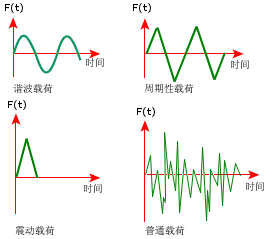

动态载荷是什么?
动态载荷通常可以划分为确定性载荷或非确定性载荷。
确定性载荷是明确定义为时间的函数，并可以被精确预测。包括：谐波、周期性或非周期性的载荷。如果载荷是确定性的，其结果也将是确定性的。
非确定性载荷不能被明确定义为时间的显函数，只有使用统计参数才能最恰当地描述它们。如果载荷是非确定性的，结果也将是非确定性的。

结构对动态载荷的反应
模态分析只计算固有频率和相应的模态特征值。
线性动态分析可使用模态信息来计算结构对动态加载的动态响应。
对于非线性系统，使用非线性动态分析在时域中计算响应。 非线性动态分析将动态响应解出为时间函数，不需要计算模态振型和频率。
何种动态载荷需要使用动态分析？
一般认为，频率小于模型最低共振频率 1/3 的动态载荷的效果，在大多数情况下接近于静态分析的结果